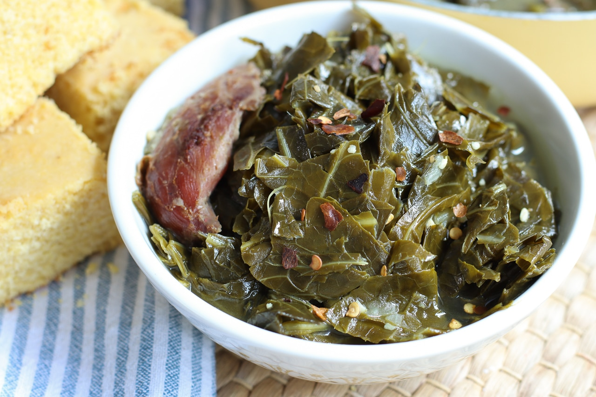

Southern Cooked Collards

List of ingredients
- onions
- garlic
- collards
- salt
- pepper
- broth
- sugar
- vinegar
- hamhocks
Remember when cooking to follow the simple instructions
- Gather the ingredients
- Combine onion, garlic, and hamhocks
- Stir the seasoning into the broth
- Cook for 3 hours
- Be Patient